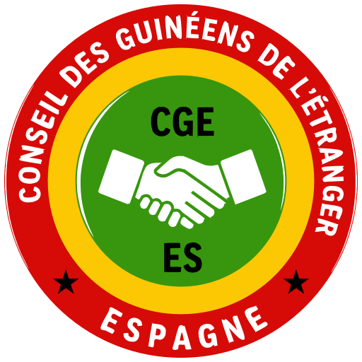
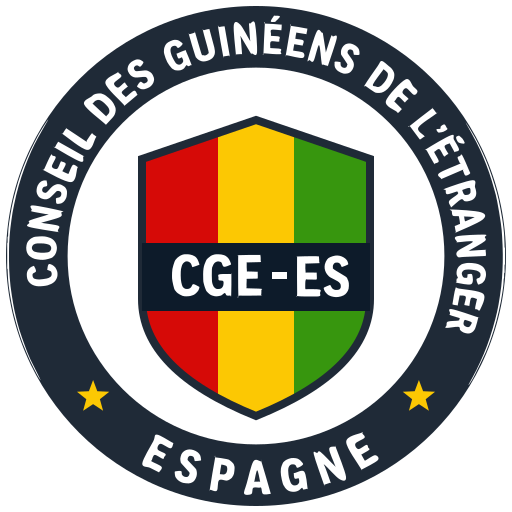
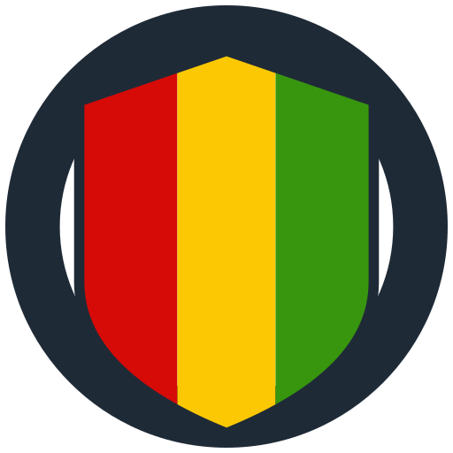
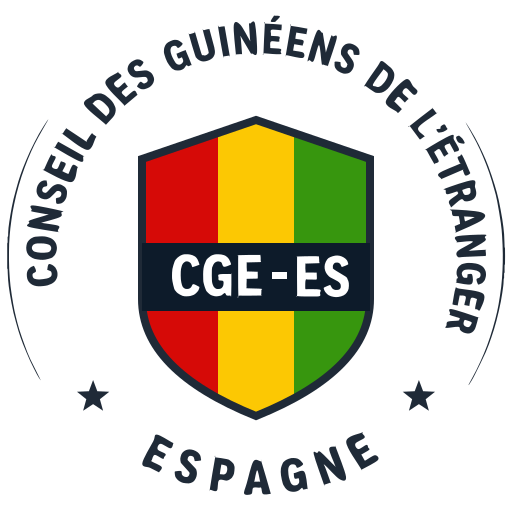
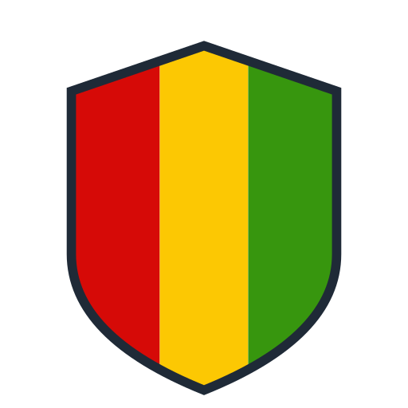

A · rojo
92
58 · pie
44 · cabecera
22 · favicon
pie
Las tres son circulares, llevan los colores de la bandera y reutilizan la letra, el «CGE» y el apretón de manos del emblema oficial: la tipografía es la del original, no una imitación. Lo que cambia es cómo se reparte el color. Fíjate sobre todo en las columnas de 44 y 22 px, que son los tamaños a los que se ve de verdad en la web.

92
92
44 · cabecera
pie
36Fondo oscuro: las dos últimas columnas son la versión en negativo, con el aro en blanco. Hace falta porque el pie de la web es azul marino y un aro marino sobre fondo marino desaparece.